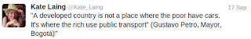
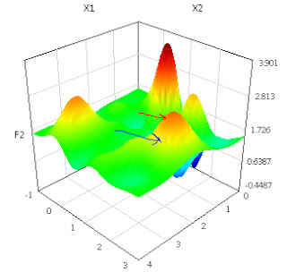

Week 36

He doesnt exactly mean work hard to learn, relearn you buffoon.
In Future Shock he also talks about the limits of how much change the human brain can handle. So it's about learning comfortably unlearn comfortably relearn comfortably. And here's the kicker: if the system does not let us do these comfortably, then it is the system that will collapse, not the people in it. There is so much even the always-be-closing, wired-but-not-tired, yeah-yeah-yeah, get-rich-or-die-tryin Americans can handle.
I think you journalists are genetically ill-equipped to understand these concepts. You know - Toffler also went to Turkey and was greeted by another buffoon there. Sadly after "reading" his books, meeting the man, the only thing this buffoon seems to have understood from the entire experience is "there is change".
Change but WHAT KIND? The man wrote hundreds of pages to explain you what that is, and most importanly what it isn't. But it somehow fails to register with ppl who are attracted only to shiny objects.
Anyway; I found out about the comical "New Rules" link from here. I'll let him do the rest of the bitchslapping from here on.
Also see here about working hard.
"There is a quote attributed to the futurist Alvin Toffler that captures this new reality: In the future “illiteracy will not be defined by those who cannot read and write, but by those who cannot learn and relearn.” [..] You have to work harder and smarter and develop new skills faster."
#PatentViolation #Apple #Trek
The entire field of particle physics is set to switch to open-access publishing, a milestone in the push to make research results freely available to readers.
Particle physics is already a paragon of openness, with most papers posted on the preprint server arXiv. But peer-reviewed versions are still published in subscription journals, and publishers and research consortia at facilities such as the Large Hadron Collider (LHC) have previously had to strike piecemeal deals to free up a few hundred articles.
After six years of negotiation, the Sponsoring Consortium for Open Access Publishing in Particle Physics (SCOAP3) is now close to ensuring that nearly all particle-physics articles — about 7,000 publications last year — are made immediately free on journal websites. Upfront payments from libraries will fund the access.
In a previous post we talked about being stuck at local optimum. In order to avoid this outcome, one solution is running the hill-climbing algorithm many times, and each time choosing a different starting position randomly. The hope is one of the starting positions will be near the "real maximum" and simple hill climb will take us to the top, so our mechanism, which cannot see the global solution, after many tries, can still pick the "maximum among the maximums", and throw away the rest.
LIFE is a complex problem, in this setting individuals could be seen as "local solvers" whose starting positions are scattered, and different. This is why pluralism is important, multiple viewpoints should matter, multiple companies, multiple enterprises, even multiple efforts inside the same company need to exist so they can all climb various different hills, each trying to find the optimum point.
In history, civilizations, cultures can find themselves being stuck at various local maximums. Roman Empire climbed one and got stuck. Ottoman Empire found itself at another and collapsed. It takes a man to recognize one is stuck at a local optimum, and decide to climb down, and start the climbing that other hill.
In a branch of mathematics called Optimization, the practitioners are interested in finding maximums or minimums of some function. A function might look like the picture below:
But there is a problem: most of the time, it is not possible to find a maximum using clean analytical means, meaning we cant calculate a simple global function that will point to the maximum.
In those cases, one is forced to use "local" methods. Meaning: Find the direction of maximum hill climb, and follow that direction. You only look around, your immediate surroundings. The hope is that by doing this, eventually you reach the top.
It is a nice technique. But such methods, can stuck at a local maximum, IOW by simply looking at our immediate surroundings, we might not be able to reach the "true" top. In the picture above, we could be at the bottom (blue arrow), we can only reach a local maximum (red arrow).
Let's say LIFE is a function. LIFE is pretty complicated, so no clean solution can exist to find the true "maximum" straightaway. IOW by simply trying to do one better than your current situation, you might arrive the top, but not the true top.
This is where humanity finds itsef at this juncture in history. We climbed that local hill, tried to do one better, only to improve our current situation, using local methods, but when we reached the top, we gazed out and saw there were other hills that were much higher than our own, and we are realizing we need try again, and for that we need to climb down, and try to climb other mountains, face other challenges.

I purposely avoided the word "system" here. The ecosystem, the overall behaviour of this new infosphere emerges from what Git allows on individual and peer-to-peer level.
Previous article used some jargon that might need some explaining.
A patch is a simple text file that just contains the "difference" of one source tree (call it a directory) with another. Say I download the Linux kernel put it under a linux directory, and make a copy call it mylinux directory, make some changes under this directory (fixing a bug maybe). When I am done, using a simple tool I can compare both directories, and generate a patch file. This single file will contain all my changes. Then, I can send this file to the Linux maintainers, post it online etc, and this file, once it is "applied" to the old tree, it will bring all my changes to it.
As it's obvious, this is decentralized, asynchronous bug fixing, testing, and code improvement.
But notice there are still centralized gatekeepers. Some of that is necessary of course, but partly this behaviour is also enforced by the old-style source control tools of the past (err - old, like from 10 years ago). Source code is kept in repositories, and in the past (!) these repositories worked in client / server mode, which encourages few commiters, and read-only access to the rest (that's why a patch file was sent you see).
Newer tools like Git and Github decentralize things even further.
There isnt even a centralized repository anymore. Everyone have their own repositories on their own machines, and the overall ecosystem [1] treats each repository as a first-class citizen. When you make a change, you change your repository, when you are done, you don't send a patch, you make a pull request. Your repository is now an actor in the infosphere.
Surely there are ppl who know more about the kernel than you do, so those people will get more pull requests, their changes will be watched more closely and pulled by others even more. But technically, there is noone stopping you from continuing your own line while still remaining as first-class citizen in the infosphere.
Who created Git? Well, the author is none other than Mr. Linus Torvalds himself.
MTBI Artisans do have Ti ability, the ability to think conceptually. To be fair all types to a certain degree can use concepts, but in Ti users this is particularly strong. For an ISTP Ti is dominant; IOW it functions almost by itself, without much prodding / by default.
But (and this is a big but), ESTP and ISTP's are also predominantly sensor types. That makes them a very curious mix; You sense their conceptual bent, the way they want to focus on the essentials, and they say a lot of "right things", but whatever the chain of thinking always seems to be limited by .. some auxillary thing. I've seen a lot of this by now; an ESTP/ISTP will have his facts, and some accompanying theories (not too imaginative, but, they have them), but then afterwards they'll immediately start going through the list of "powers that be" that -to them- seems to be the unmoveable, unchanging part of the world. It is as if they want to be able to say things in the spirit of "c'mon how could that be a tree there, you see, I saw no branches, all trees have branches" so forth.. So concepts are there, but tendency is to utilize them for sensor type things, and in the absence of that, their mind will find some other conceptual "immovable" and latch onto them.
I am sure this causes confusion in this type. Because an Artisan wants to be "out of the ordinary (unlike a Guardian)", "groundbreaking", but conceptually they are tied down to the "current world".
I also recently concluded their willingness, hunger to demonstrate courage probably is a by-product of their need to be in the moment. Bcz realistically one cannot always live in the moment, if you try, your environment will get somewhat out of whack pushing the sane limits of what is doable. To offset this, STP definitely needs a lot of courage, IOW in order to be artificially present all the time, you need artificial courage all the time.
And throughout all of this, weaker Ne will keep playing games - future projections will look iffy, or downright scary. That can also mess with the courage thing, especially if STP is stuck in environments where future does indeed start looking bleak and they need to think conceptually to save themselves from it.